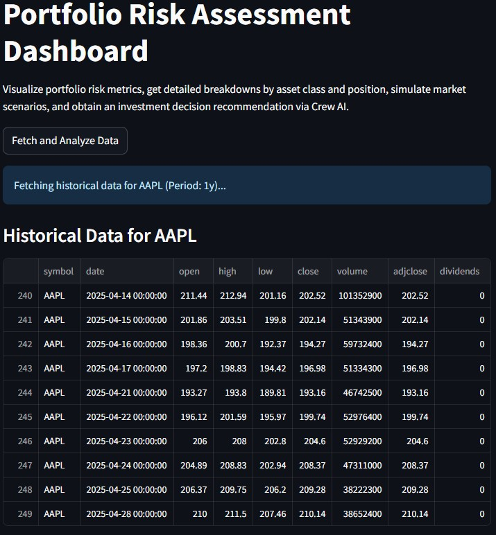
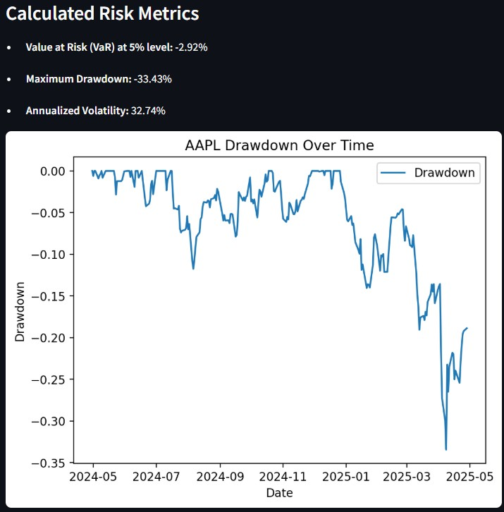
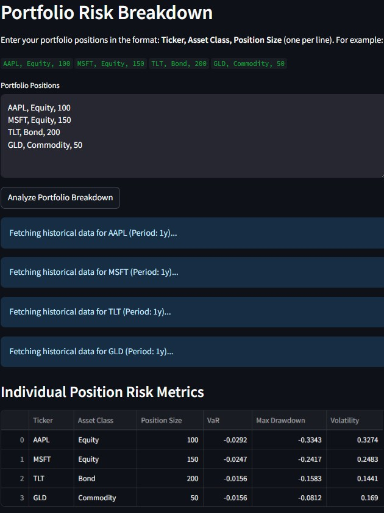
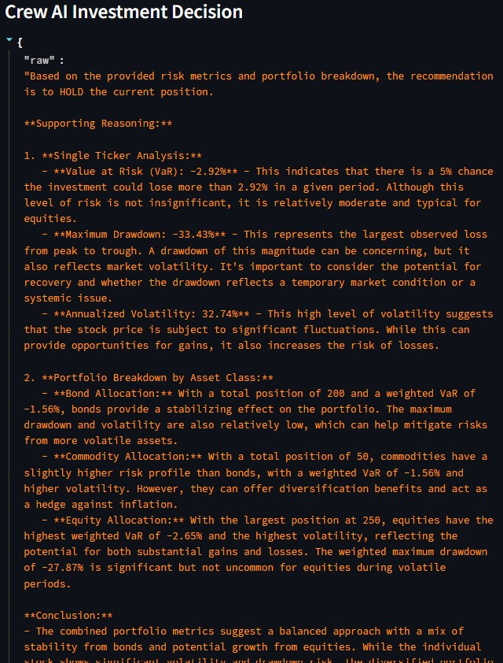
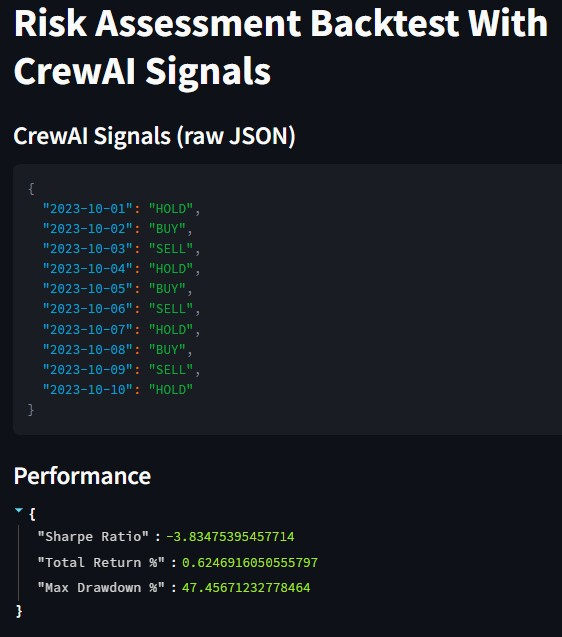
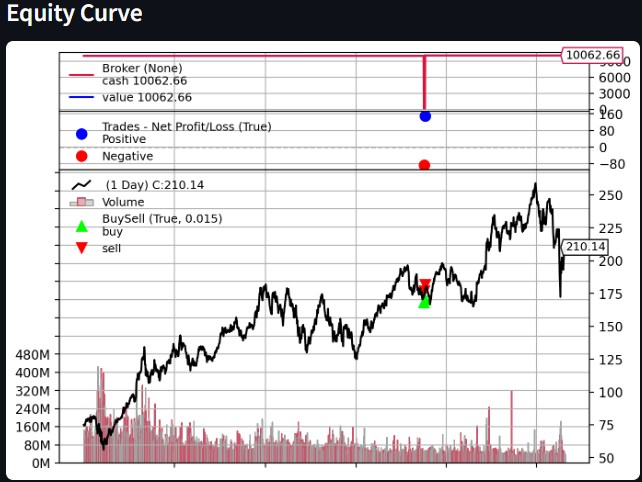

Streamlit dashboard for portfolio risk analysis with CrewAI integration
This project implements an AI Agent-based Stock Prediction system using a Streamlit application that fetches historical stock data from Yahoo Finance, computes risk metrics (Value at Risk, Maximum Drawdown, Annualized Volatility), visualizes portfolio breakdowns by asset class, and integrates CrewAI agents to provide BUY, SELL, or HOLD investment recommendations based on these metrics. I personally developed the core risk calculation functions, visualization components, CrewAI integration tasks, scenario analysis modules, and comprehensive unit and integration tests including backtesting functionality.
| Sprint | Date | Objective | Key Deliverable |
|---|---|---|---|
| Sprint 1 | Feb 1, 2025 | Minimal Viable Product: Dashboard visualizations | Implemented risk dashboard UI components (US21.1) |
| Sprint 2 | Mar 3, 2025 | Risk Assessment Integration | Integrated risk metrics calculations (US21.2) |
| Sprint 3 | Mar 23, 2025 | Experimental AI Agent Selection | Linked CrewAI agents for investment decisions (US21.3) |
| Sprint 4 | Apr 21, 2025 | Testing & Backtesting | Added unit/integration tests and backtesting (US21.4) |
Developed and styled interactive charts for risk metrics and drawdowns. Estimated 16h, actual 18h.
Implemented Value at Risk, drawdown, and volatility calculations. Estimated 18h, actual 28h.
Passed metrics to CrewAI agents for BUY/SELL/HOLD recommendations. Estimated 12h, actual 38h.
Wrote unit/integration tests and backtesting logic. Estimated 10h, actual 36h.
Explore the full codebase and deployment instructions on GitHub:
View GitHub RepositoryScreenshots:






| Date | Commit | Description | User Story | Task |
|---|---|---|---|---|
| Feb 1, 2025 | 652a3e1 | Initial risk dashboard setup | US21 | #244 |
| Feb 1, 2025 | 2cbb94f | Add visualization components | US21 | #244 |
| Feb 1, 2025 | de9d1b0 | Implement filtering and updates | US21 | #244 |
| Mar 3, 2025 | 584b07226efe2f2acae97efbdd3aaa09e4c5d38b | Add risk assessment code | US21 | US21.2 |
| Mar 23, 2025 | 8773691830a9877a83a8506b130068b7c9f2a66a | Risk assessment using CrewAI agents | US21 | US21.3 |
| Apr 21, 2025 | fbebca94a7a190ba40ba0a053f955fee60295f18 | Add unit and integration tests for risk assessment | US21 | US21.4 |
| Apr 21, 2025 | d07a50b1f41e240f480ce84f4267034a1f5f2f2b | Backtest risk assessment code | US21 | US21.4 |